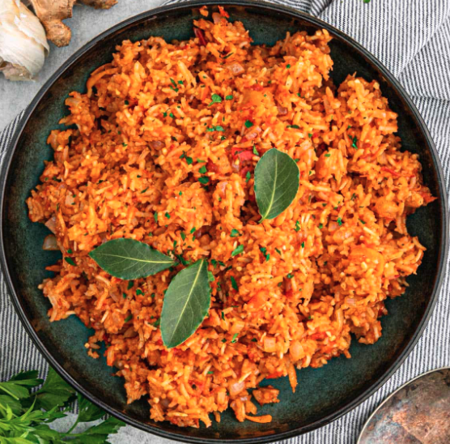

Oyinbos Guide to making jollof Rice :)

This is a foolproof recipe for cooking Jollof rice, West Africa’s most popular dish. It can be served as a side dish with West African-style grilled beef ( A.K.A Suya), but it can also be a main course. Hope you enjoy!
Ingredients
For the Tomato Sauce:
-
1 large, ripe tomato, cored and quartered
-
1 large red bell pepper, seeded and roughly chopped
-
1 whole habanero pepper, stem removed
-
1 whole Fresno chili, or jalapeño, stem removed
-
4 cloves garlic, peeled
-
1 tablespoon minced ginger
-
2 cups water
For the Rice:
-
1/3 cup olive oil
-
1 red onion, diced
-
1 teaspoon salt, plus more to taste
-
1/4 cup tomato paste
-
2 tablespoons smoked paprika
-
1 teaspoon curry powder
-
1 teaspoon cumin
-
1 teaspoon dried thyme
-
1/2 teaspoon freshly ground black pepper
-
1/4 teaspoon turmeric
-
2 1/4 cups basmati rice
-
1-2 bay leaves
-
1 tablespoon chicken bouillon paste
-
1/4 cup chopped green onion for garnish (optional)
-
1/4 cup chopped cilantro, for garnish (optional)
Directions
-
Combine tomato, red bell pepper, habanero pepper, fresno chili, garlic, ginger, and water in a blender for the sauce. Blend on high until smooth and set aside.
-
Heat olive oil in a saucepan over medium heat. Add onion and salt and sauté until onion starts to soften, 4 to 5 minutes. Clear space in the middle of the pan, add tomato paste, and sauté for 2 to 3 minutes. Season with paprika, curry powder, cumin, thyme, pepper, and turmeric; continue cooking for 1 to 2 minutes until everything is well combined.
-
Turn off the heat, and stir in the rice, making sure every grain of rice is coated with the oil-tomato mixture. Add bay leaf and chicken bouillon paste.
-
Turn heat to high, stir in tomato sauce, and bring to a vigorous simmer. Cover with a tight fitting lid, reduce heat to medium-low, and simmer for 20 minutes. Do not remove the lid or stir rice.
-
Turn off heat after 20 minutes, and set the timer for 12 minutes. Allow rice to sit and do not remove the lid.
-
After the 12 minutes are up, remove lid, and fluff rice with a fork, separating all the grains. Serve garnished with green onions and chopped cilantro.
Attention:
If rice seems to be a little undercooked at this point, stop fluffing. Pat the rice down gently with the back of the fork, cover tightly again, and set heat to medium low. Cook for another 5 minutes, and check again. KEEP AN EYE ON THE RICE OYINBO